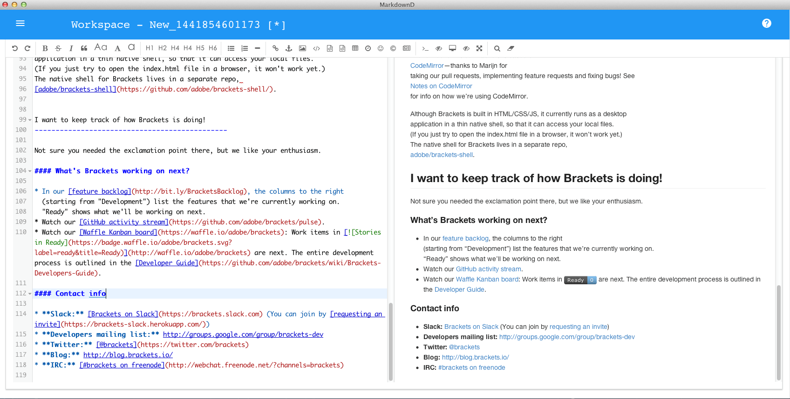

MarkdownD proben
Kostenlos | geeignet für Mac OS X 10.7.5 oder höhere Freigabe MarkdownD einkaufen
€18 | geeignet für Mac OS X 10.7.5 oder höhere Freigabe erhältlich im Apple App Store
€22 | geeignet für Mac OS X 10.7.5 oder höhere Freigabe
Kostenlos | geeignet für Mac OS X 10.7.5 oder höhere Freigabe MarkdownD einkaufen
€18 | geeignet für Mac OS X 10.7.5 oder höhere Freigabe erhältlich im Apple App Store
€22 | geeignet für Mac OS X 10.7.5 oder höhere Freigabe
Produkt-Eigenschaften
- Standardierten Markdown/CommonMark und GFM（GitHub Flavored Markdown） unterstützen
- Livevorschau unterstützen
- Formatierten Text, Codeblöcke, Tabellen, Code-Folding unterstützen, Suchung und Ersetzung, Mehrsprachen, HTML-Entitäten, Hervorhebung von Codesyntax
- Toc (Inhaltsverzeichnis), Emoji Ausdruck, Aufgabenlisten, @Links unterstützen
- Decodierung und Filterung HTML Tags und Eigenschaft unterstützen
- Tex (Latex Ausdrücke, basierend auf Katex), Flussdiagramme und Sequenzdiagramme unterstützen
- Automatische Dokumentwiederherstellung unterstützen
- Gleichzeitige Bearbeitung der mehreren Dokumenten ohne Begrenzung der Mengen unterstützen